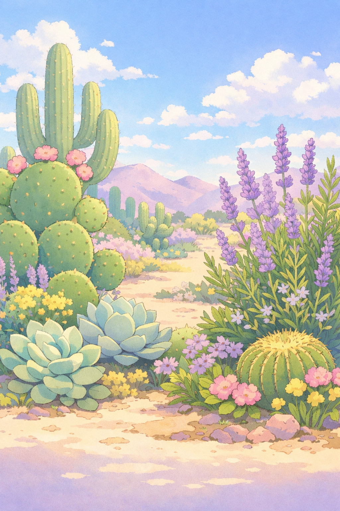

Getting Started

Gardening in the desert may seem challenging at first, but it offers a unique opportunity to grow resilient and beautiful plants. With intense sunlight and minimal rainfall, selecting drought-tolerant plants is essential for success.
Soil preparation plays a major role in plant health. Adding compost improves nutrient levels and helps the soil retain moisture longer. Many gardeners also use raised beds or containers to better control soil conditions.
Planting during cooler seasons gives your garden the best chance to thrive. With careful planning, desert gardening becomes both manageable and rewarding.
Watering & Plant Care
Deep, infrequent watering is more effective than shallow daily watering. This encourages roots to grow deeper and become more resilient. Drip irrigation systems are a popular choice for conserving water.
Plants like cacti, succulents, lavender, and rosemary thrive in desert climates. These species require less water and can withstand intense sunlight.
Mulch helps retain moisture, regulate soil temperature, and protect plant roots. Combined with smart watering habits, it significantly improves plant survival.